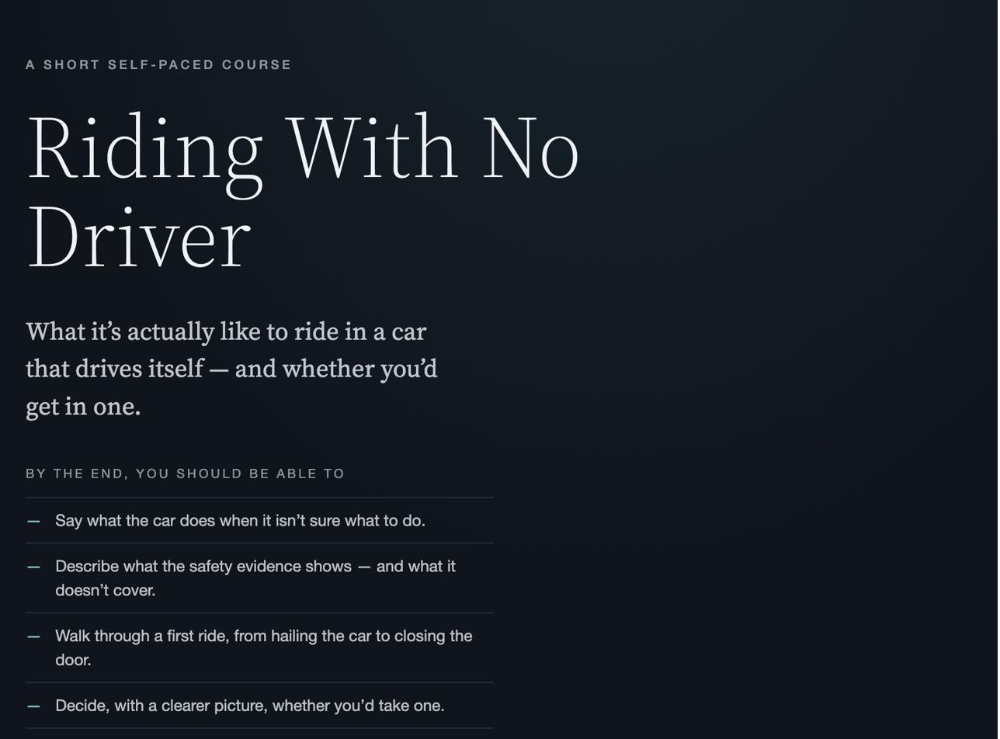

Welcome to the Lab.
This is where I share what I'm actively building — the messy version, not the case-study-ready one. Peek into what's in motion.
Current projects and journal
Understanding Your Cycle
A course about what happens in your body during puberty and the menstrual cycle — and how to recognize when to reach out for extra support. Built to be accessible on its own, so questions can be answered whenever they come up rather than waiting for someone to bring it up first.
Module 1 (Body & Cycle) is drafted. Module 2 (Products) is underway. Built in Parta.

What's on my mind
- Medical accuracy vs. approachability. Making sure the medical parts are accurate while keeping the tone warm.
- Interaction density. Module 1 has a lot going on — flip cards, drag-and-drops, click-to-reveals, knowledge checks. Feels right for the content, but I'm watching for cognitive load.
- Where does a course like this go once it's finished? Public web, partnership with an organization, something else?
Riding with No Driver
A course for anyone who's said "oh no, I can't do it" when autonomous vehicles come up. Because they're coming — sooner than later — and most of the reluctance I hear isn't really about the cars. It's about not knowing what's actually happening under the hood.
This one is about getting comfortable with the concept: what autonomous vehicles are, how they've been built and tested, and why "hey, here it is, whatever happens" isn't remotely how the technology works. A second course on the deeper technology is planned separately.
Built as a first pass at a resource for people who probably wouldn't seek this information out on their own — the ones who wouldn't land on Waymo's site unprompted, but might click through if it showed up somewhere friendlier.

What's on my mind
- Does this actually meet the objective? The goal is comfort and understanding for someone reluctant. But I'm not fully sure yet whether the content moves the needle — that's something I need real feedback on.
- Is a course the right format? There's no shortage of quick videos and explainers about autonomous vehicles. But for someone who's actively uncomfortable with the technology, does a walk-through course reach them better than a two-minute clip — or worse? Still figuring out.
- Scoping the second course. The deeper technology dive is planned as a separate course, but I'm still brainstorming what that actually covers — sensor systems, machine learning, edge cases, safety testing, the regulatory landscape. Trying to figure out what someone would need to feel like they understand the tech, not just heard about it.
- How much of my own experience belongs in the course? I have real hands-on time with autonomous features. That's useful context — but this course isn't a personal essay, and I don't want it to read like an endorsement of one company. Figuring out how to draw on that experience honestly without making the course about my car.
Open Sky
Nothing here has a ceiling.
This started as a conversation with my friend Tara — about strengths, skills, experience, and how much better work goes when you lean into what you're actually good at. We kept coming back to the same thing: the assessments that pull all of it together — strengths, skills, interests, values — tend to live behind a campus or a paywall. The free ones that anyone can reach are usually thin.
So I built the one I wanted. A skills-based career quiz on real O*NET and BLS data — free, private, no account, no email. It brings together the whole picture, including the parts most quizzes skip: how much money actually motivates you, and whether a company's values line up with your own. Results come back as a sky of star-shaped role matches rather than a ranked list. It's for anyone at one of those moments — wondering what they're doing, what they could be doing, or what they want to be doing next.
What's on my mind
- The parts other quizzes leave out. Money motivation and values alignment are huge in real career decisions — some people won't take a role that isn't lucrative, others won't work for a company they don't believe in. Both belong in the picture, not treated as afterthoughts.
- A bias I found in the scoring. The math was quietly connecting work-value answers to the status level of matched roles — people who valued stability were being steered toward lower-status jobs while people who picked risk got the high-status ones. It contradicted the whole point of the quiz, and no one designed it that way; it emerged from the data. Caught, fixed.
- What happens after the results. Most free assessments hand you a list and stop. The rigorous ones assume you'll go see a career advisor to make sense of it — which leaves out anyone without a campus or an alumni network to walk into. Open Sky's results screen carries a "where to start" section written for that person: real exploration steps matched to the specific results the sky returned.
Feedback
A course I keep coming back to but haven't started yet. Years of workplace experience plus ongoing conversations with friends and colleagues have me thinking less about the frameworks for giving feedback and more about the psychology underneath — the questions we skip on the way to delivering it.
Currently in the "discovery interview with myself" stage: figuring out what this actually is before I start building.
What's on my mind
- Is the person actually ready to receive it? Most feedback guidance starts with how to deliver. Very little starts with whether the moment is right for the person hearing it.
- Whose benefit is this really for? There's a difference between feedback that helps the receiver grow and feedback that helps the giver feel heard. Not always easy to tell which one you're giving.
- The "feedback is a gift" framing. The metaphor assumes everyone wants gifts, that gifts are inherently good, and that the receiver should be grateful. None of those hold up on inspection — so why do we still use it?
Journal
General thoughts, ideas, and things I'm mulling over — outside of active projects. Updated when something's worth writing down.
Experimenting on purpose
Been having ongoing conversations with a friend and former colleague about AI and L&D. Where it's going, what it can do, what we're still figuring out. The thing we keep coming back to is that playing with it matters more than we give it credit for.
L&D has real foundations. Frameworks. Methodologies. And then on top of that, every organization has its own guidance, every industry has its own conventions, and you get shaped by whatever room you're in. Long enough in one place and "how we do it here" starts to feel like "how it's done."
Experimenting punctures that. When you're just playing with AI, with no deliverable and no stakeholder and no scope, you find out what's actually possible before you ask whether you're supposed to. And what's possible is almost always bigger than what's allowed.
We're both in that stage right now. Not building anything for a client. Just seeing.